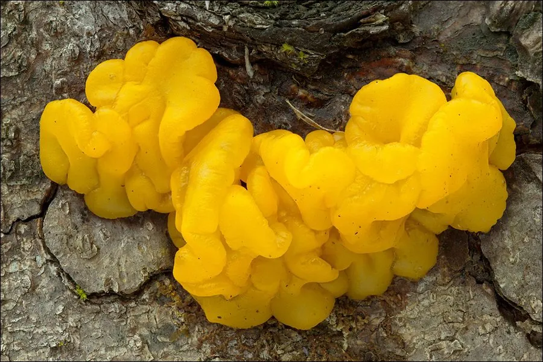

真菌 · 真菌界
掌状花耳 Dacrymyces palmatus

花耳科胶质菌，子实体橙黄至橙红、呈掌状或脑状皱褶，生于针叶树枯木，可食，但胶质无味且口感平淡。
- 分类
- 门担子菌门纲伞菌纲目花耳目科花耳科属花耳属
- 栖息环境
- 针叶树枯木、倒木与木材上，低温高湿时发生
- 地理分布
- 北半球温带针叶林分布，中国东北、西南及欧洲、北美常见
- 保护级别
- 暂无评估；种群稳定
物种志
掌状花耳的子实体胶质，直径 1–5 厘米，呈不规则的掌状、脑状或瘤状，表面橙黄、橙红至淡橙色，湿润时半透明、黏滑，干燥后收缩成橙褐色硬膜。菌肉胶质，无味。担子呈音叉状，孢子印淡黄至白色，孢子弯曲、具隔膜。
掌状花耳生于针叶树的枯木、倒木与加工材上，秋季至次年春季雨后发生，喜低温高湿。它可食，但胶质无味、口感平淡，多作汤羹配料；在民间也用于外敷。它与橙黄银耳外形相似，主要区别是掌状花耳几乎只长在针叶树材上、孢子弯曲有隔，而橙黄银耳多生于阔叶树、寄生于其他真菌。采食胶质菌需注意与有毒种类区分，并避免采食变色发臭的个体。
形态与习性
- 子实体胶质，直径 1–5 厘米，掌状或脑状
- 颜色橙黄至橙红，湿润半透明，干后橙褐
- 孢子印淡黄至白色，孢子弯曲具隔
- 生境针叶树枯木，秋至翌春雨后发生
- 食用性可食，胶质无味，多作汤羹配料
- 区别与橙黄银耳区别：生于针叶树、孢子弯曲
趣味知识
- 掌状花耳的担子呈音叉状，是花耳目区别于银耳目的重要显微特征。
- 它偏爱针叶树枯木，而外形相近的橙黄银耳多长在阔叶树上。
- 冬季严寒后遇雨它仍能膨大出现，是少数冬春季可见的胶质菌。
- 干燥时缩成一层橙褐色薄膜，几乎看不出原来的形状。